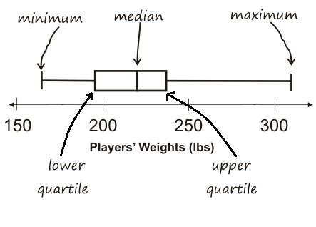

The five-number summary can be used to draw a box plot.
-
Each of the four sections of the box plot contains 25% of the data. If the values are distributed evenly across the range, the four sections of the box plot will be equal in width. Uneven distributions will show up as differently-sized sections of a box plot.
-
The left whisker extends from the minimum to Q1.
-
The box, or interquartile range, extends from Q1 to Q3. It is divided into 2 parts by the median. Each of those parts contains 25% of the data, so the whole box contains the central 50% of the data.
-
The right whisker extends from Q3 to the maximum.

{kind=link}
The box plot above, for example, tells us that:
-
The minimum weight is about 165 pounds. The median weight is about 220 pounds. The maximum weight is about 310 pounds.
-
1/4 of the players weigh roughly between 165 and 195 pounds
-
1/4 of the players weigh roughly between 195 and 220 pounds
-
1/4 of the players weigh roughly between 220 and 235 pounds
-
1/4 of the players weigh roughly between 235 and 310 pounds
-
50% of the players weigh roughly between 165 and 220 pounds
-
50% of the players weigh roughly between 195 and 235 pounds
-
50% of the players weigh roughly between 220 and 310 pounds
-
-
The densest concentration of players' weights is between 220 and 235 pounds.
-
Because the widest section of the box plot is between 235 and 310 pounds, we understand that the weights of the heaviest 25% fall across a wider span than the others. 310 may be an outlier, the weights of the players weighing between 235 pounds and 310 pound could be evenly distributed across the range, or all of the players weighing over 235 pounds may weigh around 310 pounds.
These materials were developed partly through support of the National Science Foundation,
(awards 1042210, 1535276, 1648684, and 1738598).  Bootstrap by the Bootstrap Community is licensed under a Creative Commons 4.0 Unported License. This license does not grant permission to run training or professional development. Offering training or professional development with materials substantially derived from Bootstrap must be approved in writing by a Bootstrap Director. Permissions beyond the scope of this license, such as to run training, may be available by contacting contact@BootstrapWorld.org.
Bootstrap by the Bootstrap Community is licensed under a Creative Commons 4.0 Unported License. This license does not grant permission to run training or professional development. Offering training or professional development with materials substantially derived from Bootstrap must be approved in writing by a Bootstrap Director. Permissions beyond the scope of this license, such as to run training, may be available by contacting contact@BootstrapWorld.org.